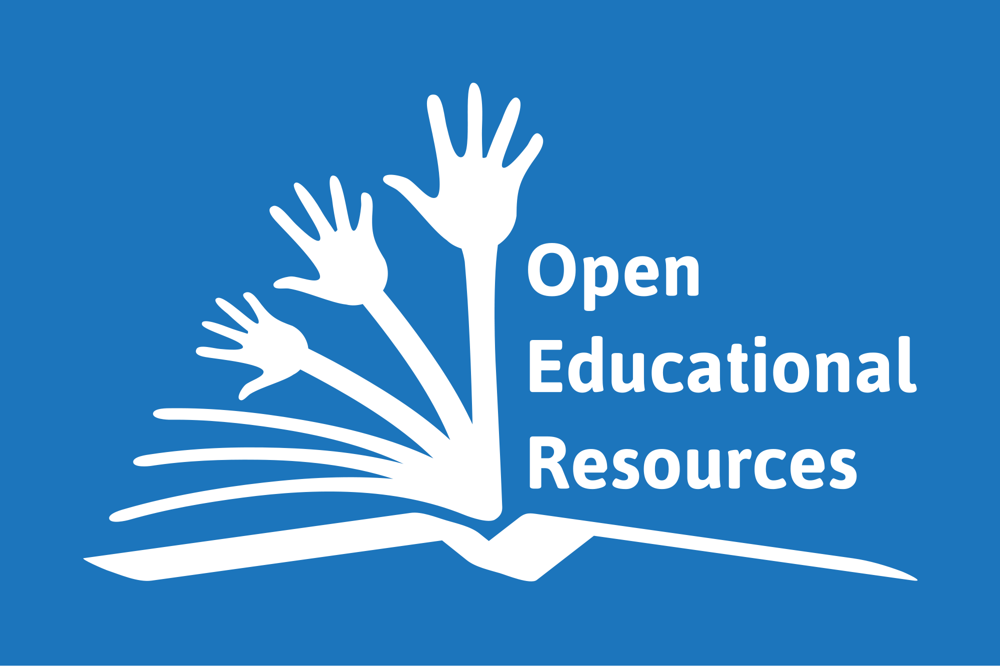

WHOAMI

- www.coding2learn.org
- @coding2learn
Raspberry Pi Trading

Pi 3

Zero

SenseHAT

Camera

MagPi
Raspberry Pi Trading


The Raspberry Pi Foundation
- An educational charity
- Founded in 2009
- Putting the power of digital making into the hands of people all over the world.
- One way we do this is by making low-cost computers and out first went on sale in February 2012
- As of March this year, we've sold 12.5 million.
What we do with all that money
Resources
Teacher Training
Outreach

Jam support

Projects
Open Source Software
We love FOSS

Open Educational Resuources

Generating resources
Start a project

Create a repo

Clone
How we make content
Markdown

How it looks